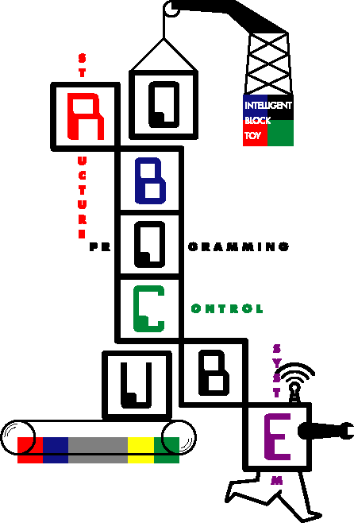

neurocubeマニュアル 目次 |
 |
|
Ⅰ. はじめに |
neuro1pdf |
|
Ⅵ. neurocubeプログラミング入門 |
neuro2.pdf |
| Ⅶ. neurocubeプログラミング １. 描画ウィンドウ ２. 組立てウィンドウ ２.１ 組立てウィンドウの目的 ２.２ バインディングの手順 ２.３ パーツアプリケーションによるブロック・機能の単体制御と、モニタリング ３. タイル定義ウィンドウ 〔コマンドタイルの作成〕 ３.１ コマンドタイルの作成 ３.２ コマンドタイルの登録 ４. テストタイル定義ウィンドウ〔条件判定文タイルの作成〕 ４.１ コマンドタイル作成との違い ① 演算子 ② コマンドタイルの内容（中身）は、制御画面の表示コントロール ③ コントロールと演算子 ④ コマンドタイルのテスト実行 ◆ センサの初期状態設定と、条件判定文タイルとの違い |
neuro3.pdf |
|
５. プログラミングウィンドウ Ⅷ. ブロック・機能の単体制御と、モニタリング（パーツアプリケーション |
neuro4.pdf |